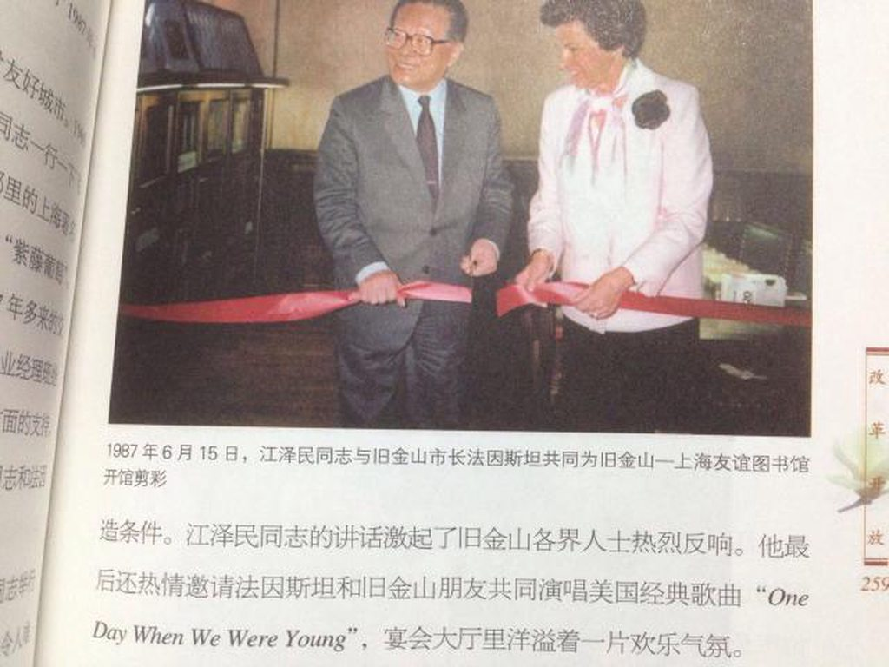
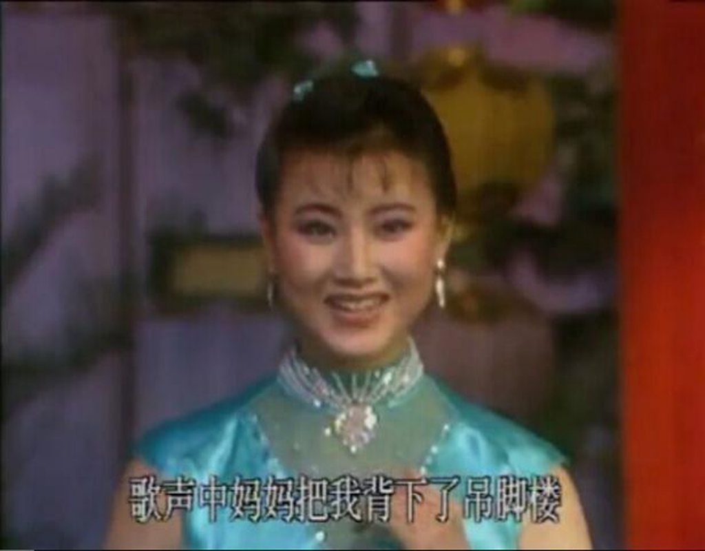

写在前面的话：发现几天不更新，就给我搞个大新闻，说主页君被封号了，把我批判一番。江学博大精深，考据不易，一篇文章背后付出很多。而且我这号纯属玩票性质，又不打广告对吧。你愿意等，我才愿意出现。
1990年央视春晚之江泽民、李鹏发表讲话（建议配合视频观看以下文字内容）
视频地址
1990年的春节是特殊的，刚刚取消戒严的北京一片肃杀气氛，人人过关的审查正在紧锣密鼓的进行中，忐忑的人们对未来走向愈加不确定，临危受命且兼具「传统士大夫情节」和「海派」作风的长者有责任也有义务对内收复人心对外重塑形象，节前他上矿山下商场，「为恢复群众支持竭尽全力」，甚至还去训练基地与世界冠军乔红切磋了下乒乓球。对外，其不避嫌频频在西方媒体上露脸，ABC主持人Barbara Walters形容江有「一副可爱的笑容」。元旦前一天，长者在办公室接受了央视记者采访，随后实况被作为新年讲话向全国播报，这是中共建政之后第一次领导人实况向全国人民新年讲话，外媒捕捉到一个细节「他身着一件西服」。当年路透社电文这样形容「中国领导人已分赴全国各地，开展马年微笑运动」
神秘嘉宾
马年微笑行动的高潮出现在春晚，春晚自创办至今一直就携带着政治意味，并非独立的民间叙事，但最高领导人出现在春晚舞台上却是33年来仅这一次。当年的春晚总导演黄一鹤回忆「我们也没请他来，他也没通知。演出当晚，马上就12点了，赵忠祥该上台零点报时。就在这时，接到紧急通知：江和李要到现场，抓紧时间准备」
长者一身西服和月月鸟走上舞台，并先后发表讲话，未来被各路脱口秀演员模仿的经典句式「同日们喷油们，窝代表党中央、国务院、中央军委向全国郭族人民…向中国人民解放军全体指战员、武警部队和公安干警…」即出自此次讲话。而讲话风格一直被人诟病的月月鸟依然死板僵硬，并全力为自己打气，一句「向支持和理解我们的国际友人致以春节的祝贺」也是耐人寻味。
那年的春晚观众都是请的大学生，掌声诡异地热烈。讲话完后，长者与月月鸟下台与演职人员见面。从视频中可以看到，长者在握手时对姜昆说「我一看就知道你的名字，你今晚表演得淋漓尽致，相声演员要有真本事⋯⋯」又对冯巩说「你也是，我已经听过好几次你的相声」，在见到《当我们年轻的时候》演唱者翟春萍时，翟拿出一张貌似是合影的照片给长者看并说「87年在美国…」，长者一看顿时飚了句「one day when we were young」。笔者考证这句也是有典故的，87年6月13日，江应邀前往旧金山访问，期间他热情邀请美女市长共同演唱了这首39年奥斯卡获奖影片《翠堤春晓》的插曲《one day when we were young》，正是翟在春晚唱的这首。长者不仅飙了英语，在见到戏曲小品《拷红》表演者时还用上海话问「吴剧还是越剧」

不仅是长者，月月鸟也紧跟其后与演员交流，他见到姜昆时说「…活灵活现，而且后来都验证了」前半句视频听不清，那「活灵活现」和「后来都验证了」什么呢？我们来看姜昆的节目是和唐杰忠合作的相声《学唱歌》，节目最后，姜昆让唐找一首歌，他来辅导，唐选了首《年轻人就是这样相爱》，出自歌曲《哎哟妈妈》，唐就在姜昆的辅导下唱起来「河里青蛙从哪里来，是从那水田向河里游来」，唱完这句姜问你在干嘛呢，唐说「我在摸蛤蟆呢」。这已经不是月月鸟在全国观众朋友们第一次黑长者了，89年6月28日，长者第一次以新任党的总书记的职务在全国人民面前亮相，电视上月月鸟在介绍完六位新任政治局常委后指着长者说「江是我们的领导，从今以后，我们这个集体所有人都跟随他的指导，当然是在老一代的帮助下」，最后这一句看似无心，却暗示没有后面这个条件，新任总书记无法长久。
“小背篓”的惊艳出场
下面是我英，被经常拿来做比较的另一位歌手，年长我英4岁，资历也老，84年就开始登上春晚，并前后20次登上春晚，直到07年丈夫在单位内被提拔以后才转居幕后。这样的春晚钉子户却意外缺席了90年春晚，不知道是不是因为半年前为西方资本主义势力献唱，就像今年春晚导演哈文说的「不用有污点的演员」
女人之间的竞争是惨烈的，这位歌手的这次缺席成就了上演春晚处女秀的我英，一首小背篓，一身蓝色旗袍，玲珑有致的身材，虽然面容青涩，还带点婴儿肥，但金嗓动听宛若出水女神，令在场的观众如痴如醉。沈从文笔下心疼的湘女，终于不需再以悲剧的面貌呈现在世人面前，这位从湘西老寨走出来的女孩，美丽如蝶，才华横溢，第一登台便崭露头角。

后来就到了全场的闪光时刻，当时全场演职人员很多且不乏后面观众伸手向前，现场一度有点混乱，长者一路走过去，却不曾迷路，喜欢的人的气息是从不失职的温柔路标。终于他走到了她的面前，她娇羞的低了下头，长者明显愣了下，没有问她「声乐有几种唱法」，我英只顾傻傻地笑，晕眩在了长者的光芒里，而长者幸福地就像太阳下面眯着眼睛给心爱的人打电话那样，一眼一瞬间，恒久永流传。握完手后，两人好像都恍惚了，像踩在云朵上一样不知所措，长者一改之前的谈笑风生，与后面的人只是机械性的握手，甚少话语。时年23岁热气腾腾的我英就这样唤醒了长者心中的少年。
从90年这届春晚直到2013年，我英一次都未缺席，在13年那届春晚的告别演出中，我英先是和席琳迪翁合唱扬州市市歌茉莉花，又陪其演唱其成名曲「my 蛤 will go on」，如此各种致敬的谢幕演出堪称完美。
其他花絮
总有痴心被辜负，总有奢望被满足，小背篓前一个节目是张晓梅独唱《好大一课树》，彼时这首歌尚未被田震翻唱并用来歌颂人民教师，胡YB的女儿在书中提到了这首歌的创作背景，「1989年4月15日那天，邹友开在返京的火车上突然听到广播里播发胡病逝的消息，心里顿时悲痛万分，于是饱含泪水和真情创作了这首深切怀念胡的歌」。所以这首关于半年前掀起巨涛波澜导火索的歌居然上了当年的春晚，不能不说大裤衩中出了叛徒。
说到叛徒，90年的春晚还奉献了一个经典节目，陈佩斯和朱时茂的《主角与配角》，其中扮演配角叛徒陈佩斯的「队长别开枪是我」「皇军托我给你带个话」两句经典台词传诵至今。和首次亮相的我英一样，这届春晚还是另外一位时下话题人物的处女秀，这就是赵本山。同样从那年开启春晚旅程的还有巩汉林。
这届春晚结束后的第二天晚上，解除戒严后第17天的北京，在工体，最高层默许了沉寂了半年的崔健举办第一次公开演唱会，现场有8000多名崇拜者到场，这在当时的北京是难以想象的。崔健推出了一首新歌，他说「我们全都是获得机遇的人」。他没说错，未来十五年，一段蛤艺复兴的时代开始了。